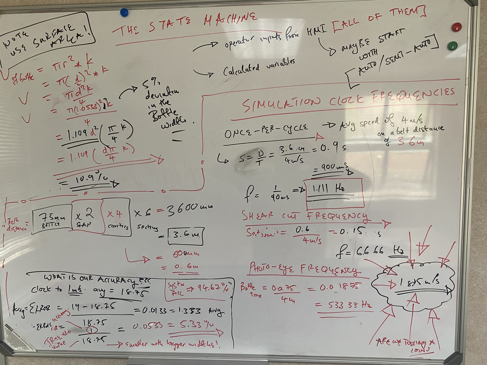

Industrial Automation · PLC Programming · Sensor Integration · High-Speed Conveyor Control
Industrial Reject Control System
Developed a PLC-based rejection control system for a high-speed bottle conveyor in a confidential industrial application. The system identified defective bottles and coordinated their rejection at a downstream station while maintaining accurate product tracking at high throughput.
The primary engineering challenge was reliably associating detected defects with the corresponding bottles as they travelled along the conveyor, accounting for conveyor speed, sensor response times, product spacing and actuator timing.
My role
Contributed to the system design and implementation, including control-system architecture, hardware and sensor integration, PLC software development and functional testing.
Developed modular control logic for sensor monitoring, product synchronisation, conveyor tracking, rejection decisions, actuator control and fault handling. Supported system integration and simulation-based verification to assess the behaviour of individual modules and the overall rejection sequence.
System / solution
Implemented the control system using a Siemens SIMATIC S7-1200 PLC, programmed in TIA Portal V19.
The software was structured into functional modules to separate input processing, product tracking, process monitoring, rejection logic, actuator control and fault management. Sensor signals were processed to establish product synchronisation and track bottle positions through the inspection and rejection zones.
The controller used the tracking data and configured rejection parameters to determine when a defective bottle reached the rejection point, triggering the relevant actuator within the required timing window. Additional monitoring logic supported fault detection and prevented rejection actuation when critical process conditions, such as valid conveyor-speed information, were not satisfied.
Engineering decisions
A key design decision involved selecting a suitable sensing approach for identifying bottle characteristics relevant to the rejection process.
A photoelectric sensor-based approach was selected for the relevant detection task rather than relying on a machine-vision system. Photoelectric sensing offered a comparatively simple integration path, fast response, predictable signal processing and lower computational complexity for the required detection function.
The PLC-based architecture combined sensor inputs with conveyor-tracking logic rather than relying solely on instantaneous sensor states. This enabled the controller to maintain the association between a detected bottle and its subsequent rejection event, even as the bottle moved beyond the original sensing position.
The software was also divided into reusable functional modules to improve maintainability, simplify testing and support fault isolation during commissioning.
Challenges and validation
The main engineering challenges involved maintaining accurate product tracking and coordinating rejection actuation under high-speed operating conditions.
Key considerations included:
- Timing and synchronisation: Associating detected products with the correct rejection event as they travelled along the conveyor.
- Speed measurement: Processing conveyor-speed information to support distance and timing calculations.
- Detection reliability: Monitoring sensor signals and identifying abnormal or invalid operating conditions.
- Actuator coordination: Ensuring rejection commands were issued at the appropriate point in the product's travel.
- Fault handling: Preventing unreliable tracking information from producing unintended rejection commands.
The control software was developed and tested in functional modules before integration. Simulation and software testing were used to verify signal processing, synchronisation, tracking behaviour, rejection decisions and fault-handling sequences.
Project media


Outcome
The system achieved the intended high-speed rejection-control functionality, with a reported operating throughput of approximately two milliseconds per bottle, as recorded during project testing.
The implementation established a modular PLC control architecture for sensor-based defect detection, conveyor tracking and coordinated reject actuation. The project also provided a foundation for further optimisation of timing accuracy, fault diagnostics and maintainability in high-throughput industrial applications.
Client identity and confidential process details have been omitted.